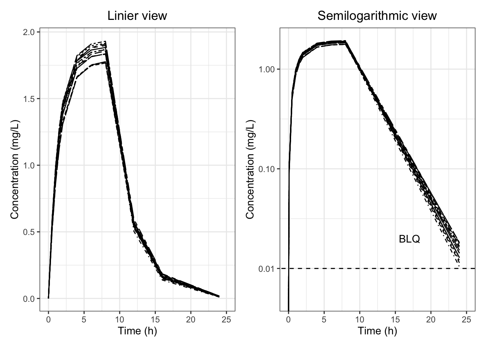
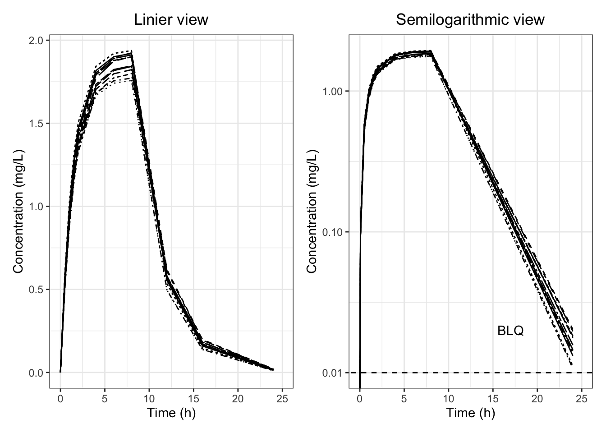

# CRAN から入手可能なパッケージ
##############################
pacman::p_load(
# 一般的なデータ管理
####################
tidyverse,
magrittr,
# パッケージのインストールと管理
################################
pacman, # パッケージのインストール・読み込み
renv, # グループで作業する際のパッケージのバージョン管理
# プロジェクトとファイルの管理
##############################
here, # Rのプロジェクトフォルダを基準とするファイルパス
rio, # 様々なタイプのデータのインポート・エクスポート
# CDISC ADaM関連パッケージ
##########################
Tplyr, # Rのプロジェクトフォルダを基準とするファイルパス
# スタイルテーブル関連パッケージ
################################
huxtable, # html,LaTeX,rtf,docx,xlsx and pptxへ変換可能なスタイル
# 図表関連パッケージ
####################
patchwork, # 複数の図表をまとめられるパッケージ
# 出力形式関連パッケージ
########################
pharmaRTF # 医薬品申請関連資料の出力用パッケージ
)9 TLG作成の事例
nca <- import("./output/nca.sas7bdat")
adsl <- import("./output/adsl.xpt")
adnca <- import("./output/adnca.xpt")
nca_t <- nca %>%
pivot_longer( -c(SUBJID,TRT01A)
, names_to = "PARAMCD"
, values_to = "AVAL") %>%
mutate(TRT01A = factor( TRT01A
,c( "Xanomeline Low Dose"
,"Xanomeline High Dose")))
prec_data <- tibble::tribble(
~PARAMCD, ~max_int, ~max_dec,
"CMAX" , 2, 1,
"AUCLST" , 4, 1,
"AUCIFO" , 4, 1,
"TMAX" , 2, 2,
"MRTEVIFO", 3, 1,
"LAMZHL" , 2, 2,
) %>%
mutate(PARAMCD = factor(PARAMCD
,c( "CMAX","AUCLST","AUCIFO"
,"TMAX","LAMZHL","MRTEVIFO")))
header_data <- adsl %>%
filter(
SAFFL == "Y" &
TRT01A %in% c("Xanomeline Low Dose","Xanomeline High Dose")) %>%
mutate(
TRT01A = factor( TRT01A
,c( "Xanomeline Low Dose"
,"Xanomeline High Dose"))) %>%
group_by(TRT01A) %>%
summarise(n=n())
nca_summary <- nca_t %>%
filter(PARAMCD %in% c( "CMAX","AUCLST","AUCIFO"
,"TMAX","MRTEVIFO","LAMZHL")) %>%
mutate(PARAMCD = factor( PARAMCD
,c( "CMAX","AUCLST","AUCIFO"
,"TMAX","LAMZHL","MRTEVIFO"))) %>%
tplyr_table(.,TRT01A) %>%
add_layer(
group_desc(AVAL, by = PARAMCD) %>%
set_custom_summaries(
CV = (mean(.var) / sd(.var)) * 100
,geometric_mean = exp(sum( log(.var[.var > 0])
, na.rm=TRUE) / length(.var))
,CV_geo_mean = (sqrt(exp(var(log(.var[.var > 0])-1)))) * 100
) %>%
set_format_strings(
'N' = f_str('xx' , n)
,'Mean (SD)' = f_str('a.a+1 (a.a+2)', mean, sd)
,'CV% mean' = f_str('a.a+1', CV)
,'Geo-mean' = f_str('a.a+1', geometric_mean)
,'CV% Geo-mean' = f_str('a.a+1', CV_geo_mean)
,'Median' = f_str('a.a+1', median)
,'[Min; Max]' = f_str('[a.a+0; a.a+0]', min, max)
) %>%
set_precision_on(AVAL) %>%
set_precision_by(PARAMCD) %>%
set_precision_data(prec_data)
) %>%
build()
nca_summary2 <- nca_summary %>%
mutate(row_label1 = case_when(
row_label1 == "CMAX" ~ "Cmax"
,row_label1 == "AUCLST" ~ "AUC last"
,row_label1 == "AUCIFO" ~ "AUC Inf"
,row_label1 == "TMAX"~ "tmax"
,row_label1 == "LAMZHL"~ "t1/2"
,row_label1 == "MRTEVIFO" ~ "MRT"
,TRUE ~ ""
)) %>%
apply_row_masks(row_breaks = TRUE) %>%
select(-starts_with("ord")) %>%
add_column_headers(
paste0(" | | Xanomeline \\line Low Dose(54mg)"
,"\\line(N=**Xanomeline Low Dose**)| "
,"Xanomeline \\line High Dose(81mg)"
,"\\line(N=**Xanomeline High Dose**) "),
header_n = header_data)
ht <- nca_summary2 %>%
huxtable::as_hux(., add_colnames=FALSE) %>%
# bold the first row
huxtable::set_bold(1, 1:ncol(.), TRUE) %>%
# Center align the first row
huxtable::set_align(1, 1:ncol(.), 'center') %>%
# Center align the results
huxtable::set_align(2:nrow(.), 3:ncol(.), 'center') %>%
# Bottom align the first row
huxtable::set_valign(1, 1:ncol(.), 'bottom') %>%
# Put a border under the first row
huxtable::set_bottom_border(1, 1:ncol(.), 1) %>%
# Set the table width
huxtable::set_width(1.5) %>%
# Don't escape RTF syntax
huxtable::set_escape_contents(FALSE) %>%
# Set the column widths
huxtable::set_col_width(c(.2, .2, .2, .2))
ht| Xanomeline \line Low Dose(54mg)\line(N=96) | Xanomeline \line High Dose(81mg)\line(N=72) | ||
| Cmax | N | 96 | 72 |
| Mean (SD) | 1.84 ( 0.055) | 1.84 ( 0.055) | |
| CV% mean | 3363.89 | 3373.81 | |
| Geo-mean | 1.84 | 1.84 | |
| CV% Geo-mean | 100.04 | 100.04 | |
| Median | 1.84 | 1.84 | |
| [Min; Max] | [ 1.8; 1.9] | [ 1.8; 1.9] | |
| AUC last | N | 96 | 72 |
| Mean (SD) | 18.97 ( 0.560) | 18.95 ( 0.584) | |
| CV% mean | 3389.53 | 3244.87 | |
| Geo-mean | 18.96 | 18.94 | |
| CV% Geo-mean | 100.04 | 100.05 | |
| Median | 18.87 | 19.02 | |
| [Min; Max] | [ 18.0; 20.0] | [ 18.0; 20.0] | |
| AUC Inf | N | 96 | 72 |
| Mean (SD) | 19.02 ( 0.562) | 19.00 ( 0.589) | |
| CV% mean | 3386.36 | 3226.24 | |
| Geo-mean | 19.01 | 18.99 | |
| CV% Geo-mean | 100.04 | 100.05 | |
| Median | 18.91 | 19.08 | |
| [Min; Max] | [ 18.1; 20.0] | [ 18.0; 20.1] | |
| tmax | N | 96 | 72 |
| Mean (SD) | 8.000 ( 0.0000) | 8.000 ( 0.0000) | |
| CV% mean | Inf | Inf | |
| Geo-mean | 8.000 | 8.000 | |
| CV% Geo-mean | 100.000 | 100.000 | |
| Median | 8.000 | 8.000 | |
| [Min; Max] | [ 8.00; 8.00] | [ 8.00; 8.00] | |
| t1/2 | N | 96 | 72 |
| Mean (SD) | 2.346 ( 0.4380) | 2.293 ( 0.0981) | |
| CV% mean | 535.694 | 2336.778 | |
| Geo-mean | 2.322 | 2.291 | |
| CV% Geo-mean | 100.805 | 100.092 | |
| Median | 2.281 | 2.290 | |
| [Min; Max] | [ 2.14; 5.35] | [ 2.14; 2.45] | |
| MRT | N | 96 | 72 |
| Mean (SD) | 6.83 ( 0.132) | 6.83 ( 0.129) | |
| CV% mean | 5165.95 | 5286.80 | |
| Geo-mean | 6.83 | 6.83 | |
| CV% Geo-mean | 100.02 | 100.02 | |
| Median | 6.82 | 6.83 | |
| [Min; Max] | [ 6.6; 7.3] | [ 6.6; 7.0] | |
doc <- pharmaRTF::rtf_doc(ht) %>%
pharmaRTF::add_titles(
pharmaRTF::hf_line( "Protocol: CDISCPILOT01"
, "PAGE_FORMAT: Page %s of %s"
, align='split', bold=TRUE, italic=TRUE),
pharmaRTF::hf_line( "Table 14-2.01"
, align='center', bold=TRUE, italic=TRUE),
pharmaRTF::hf_line( "Summary of Demographic and Baseline Characteristics"
, align='center', bold=TRUE, italic=TRUE)
) %>%
pharmaRTF::add_footnotes(
pharmaRTF::hf_line( "FILE_PATH: Source: %s"
, "DATE_FORMAT: %H:%M %A, %B %d, %Y"
, align='split'
, bold=FALSE
, italic=TRUE)
) %>%
pharmaRTF::set_font_size(10) %>%
pharmaRTF::set_ignore_cell_padding(TRUE) %>%
pharmaRTF::set_column_header_buffer(top=1)
pharmaRTF::write_rtf(doc, file='./output/table_14.2.01.rtf')
################################################################################
p1 <- adnca %>%
filter(TRT01A=="Xanomeline Low Dose" &
PARAMCD=="XAN" & ATPTREF=="Day 1") %>%
ggplot(.,aes(x=MRRLT,y=AVAL,group=SUBJID))+
theme_set(theme_classic()) +
geom_line(aes(linetype = SUBJID))+
ggtitle("Linier view") +
xlab("Time (h)")+
coord_cartesian(xlim = c(0, 25))+
ylab("Concentration (mg/L)")+
theme_bw()+
theme(legend.position = "none",plot.title = element_text(hjust = 0.5))
p2<- adnca %>%
filter(TRT01A=="Xanomeline Low Dose" &
PARAMCD=="XAN" & ATPTREF=="Day 1") %>%
ggplot(.,aes(x=MRRLT,y=AVAL,group=SUBJID))+
theme_set(theme_classic()) +
geom_line(aes(linetype = SUBJID))+
geom_abline(intercept = log10(0.01), slope = 0,linetype = 2) +
annotate("text", x=17, y=0.02, label="BLQ")+
ggtitle("Semilogarithmic view") +
xlab("Time (h)")+
coord_cartesian(xlim = c(0, 25))+
scale_y_continuous(trans='log10')+
ylab("Concentration (mg/L)")+
theme_bw()+
theme(legend.position = "none",plot.title = element_text(hjust = 0.5))
p1 + p2
p3 <- adnca %>%
filter(TRT01A=="Xanomeline High Dose" &
PARAMCD=="XAN" & ATPTREF=="Day 1") %>%
ggplot(.,aes(x=MRRLT,y=AVAL,group=SUBJID))+
theme_set(theme_classic()) +
geom_line(aes(linetype = SUBJID))+
ggtitle("Linier view") +
xlab("Time (h)")+
coord_cartesian(xlim = c(0, 25))+
ylab("Concentration (mg/L)")+
theme_bw()+
theme(legend.position = "none",plot.title = element_text(hjust = 0.5))
p4 <- adnca %>%
filter(TRT01A=="Xanomeline High Dose" &
PARAMCD=="XAN" & ATPTREF=="Day 1") %>%
ggplot(.,aes(x=MRRLT,y=AVAL,group=SUBJID))+
theme_set(theme_classic()) +
geom_line(aes(linetype = SUBJID))+
geom_abline(intercept = log10(0.01), slope = 0,linetype = 2) +
annotate("text", x=17, y=0.02, label="BLQ")+
ggtitle("Semilogarithmic view") +
xlab("Time (h)")+
coord_cartesian(xlim = c(0, 25))+
scale_y_continuous(trans='log10')+
ylab("Concentration (mg/L)")+
theme_bw()+
theme(legend.position = "none",plot.title = element_text(hjust = 0.5))
p3 + p4